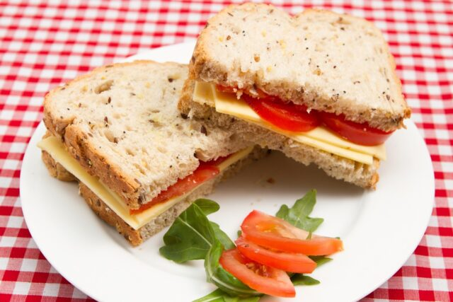

El sándwich de jamón es una opcion clásica y versátil que nunca pasa de
moda. Esta receta te guiará para preparar un sándwich delicioso y
reconfortante que se puede disfrutar en cualquier momento.
Ingredientes
- 2 rebanades de pan de tu elección.
- 2-3 lonchas de jamón.
- 1 hoja de lechuga.
- 2-3 rodajas de queso (opcional).
- Mostaza o mayonesa
- mantequilla o margarina para tostar el pan (opcional)
Instrucciones
-
Preparar las ingredientes: Lava y corta las verduras (lechuga o
tomate) si es necesario.
-
Tostar el pan: Opcionalmente, unta una fina capa de mantequilla
o margarina en una cara de cada rebanda de pan.
-
Armar el sándwich: Coloca las lonchas de jamón, las rodajas de
queso (si lo deseas), la hoja de lechuga y las rodajas de tomate en
una de las rebanades de pan.
- Condimentar: Agrega mostaza o mayonesa al gusto.
-
Cortar y servir: Corta el sándwich en diagonal para presentarlo
de manera atractiva y sirvelo.
Nota: Asegúrate de adaptar la receta a tus preferencias
personales y las de tus invitados. Disfruta de tus delicios!
Volver a la pagina principal